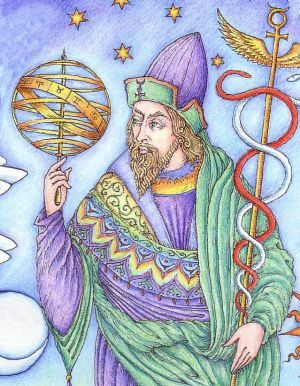
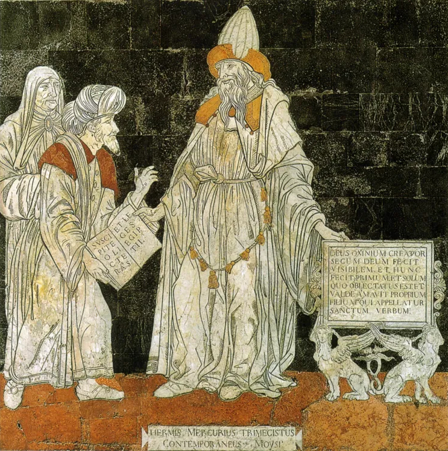
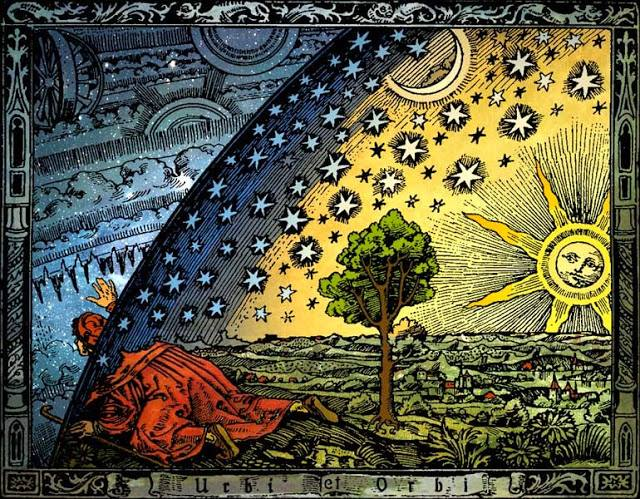
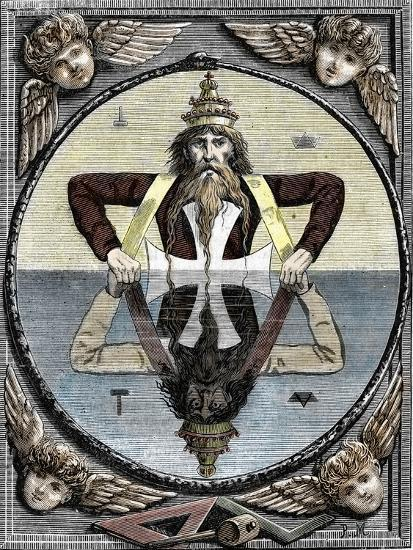
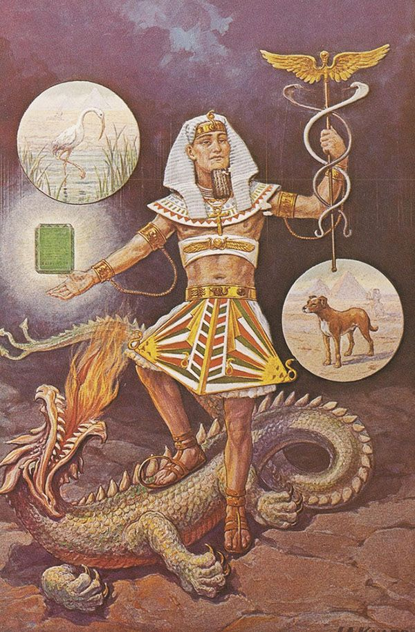
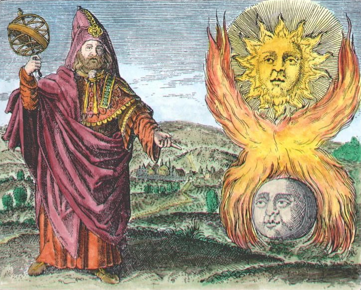

A Lenda de Hermes Trismegistus
Prefácio
Hermes Trismegistus é uma figura lendária da antiguidade, considerada uma combinação das divindades gregas Hermes e egípcias Thoth. Ele é associado ao hermetismo, uma tradição esotérica e filosófica que busca entender a natureza do universo e a espiritualidade através de ensinamentos ocultos e alegóricos.
A Tábua de Esmeralda
A Tábua de Esmeralda é um texto clássico do hermetismo, atribuído a Hermes Trismegistus. Este texto é uma das fontes mais influentes do pensamento esotérico ocidental e é conhecido por seus ensinamentos sobre a transmutação e a alquimia. O texto é famoso por suas frases enigmáticas e simbólicas, que discutem a natureza da realidade e a conexão entre o mundo material e o espiritual. Um dos seus ensinamentos mais conhecidos é a máxima:
"Assim como é acima, é abaixo; assim como é abaixo, é acima."
Este princípio reflete a ideia de que existe uma correspondência entre os diferentes planos da existência, do físico ao espiritual.
Os 7 Princípios Herméticos
Os 7 Princípios Herméticos, descritos no Kybalion (um texto moderno sobre hermetismo), são os fundamentos do pensamento hermético:
• O Princípio do Mentalismo: Afirma que "O Todo é Mente; o Universo é Mental." Tudo no universo é uma manifestação da mente universal. A realidade é, portanto, uma projeção da mente.
• O Princípio da Correspondência: Expressado pela máxima "Assim como é acima, é abaixo; assim como é abaixo, é acima." Este princípio sugere que há uma correspondência e relação entre os diferentes planos de existência e realidade.
• O Princípio da Vibração: Diz que "Nada descansa; tudo se move; tudo vibra." Tudo no universo está em constante movimento e vibração, desde as maiores galáxias até as menores partículas.
• O Princípio da Polaridade: Afirma que "Tudo é dual; tudo tem polos; tudo tem seu par de opostos." Cada aspecto da realidade possui um oposto, e esses opostos são, na verdade, manifestações do mesmo princípio.
• O Princípio do Ritmo: Estabelece que "Tudo flui e reflui; tudo tem suas marés; tudo sobe e desce." Todos os processos naturais seguem um ciclo de fluxo e refluxo, de subida e descida.
• O Princípio de Causa e Efeito: Afirma que "Toda causa tem seu efeito; todo efeito tem sua causa." Nada ocorre sem uma razão, e todos os eventos são consequências de causas anteriores.
• O Princípio do Gênero: Diz que "O gênero está em tudo; tudo tem seus princípios masculino e feminino." Cada coisa possui aspectos masculinos e femininos, que são necessários para a criação e a transformação.
Hermes Trismegistus e Thoth
Hermes Trismegistus é uma fusão dos deuses Hermes (da mitologia grega) e Thoth (da mitologia egípcia). Hermes, na Grécia antiga, era o mensageiro dos deuses, conhecido por sua eloquência e habilidade em transmitir conhecimento. Thoth, no Egito, era o deus da escrita, da sabedoria e da magia, frequentemente representado com a cabeça de um íbis. A junção dessas duas figuras representa a confluência de tradições esotéricas e filosóficas do Ocidente e do Oriente.
Reflexão
O hermetismo e seus ensinamentos influenciaram profundamente a filosofia ocidental, a alquimia, a astrologia e várias práticas esotéricas. A busca por entendimento espiritual e a aplicação dos princípios herméticos visam o autoconhecimento e a harmonia com as leis universais.
Esses conceitos continuam a ser explorados por aqueles interessados em esoterismo e espiritualidade, e o hermetismo oferece uma abordagem simbólica para compreender o cosmos e a própria existência.